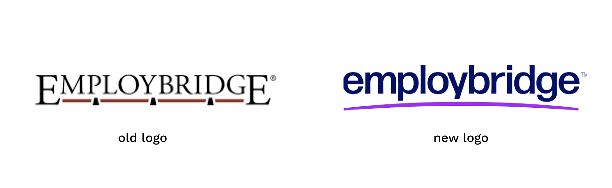
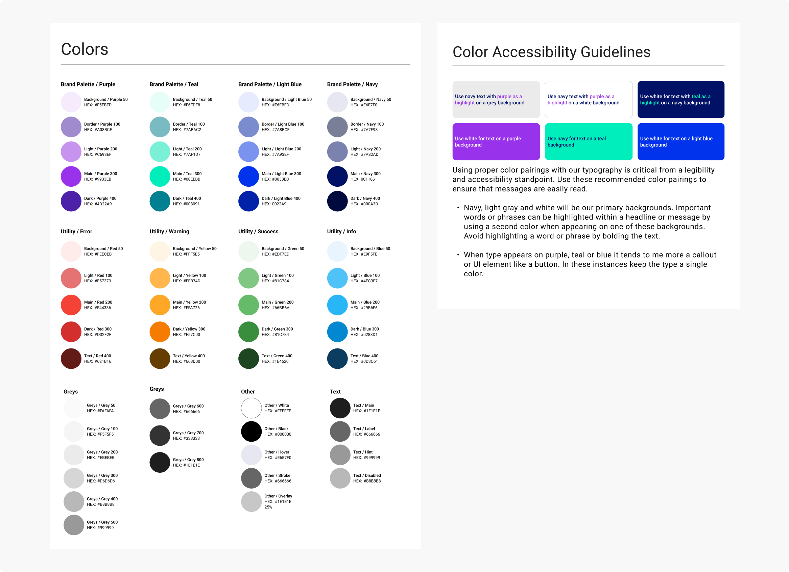
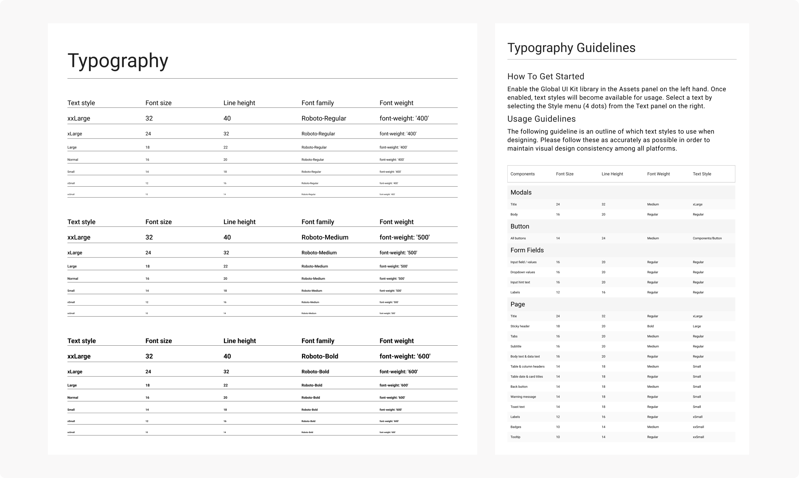
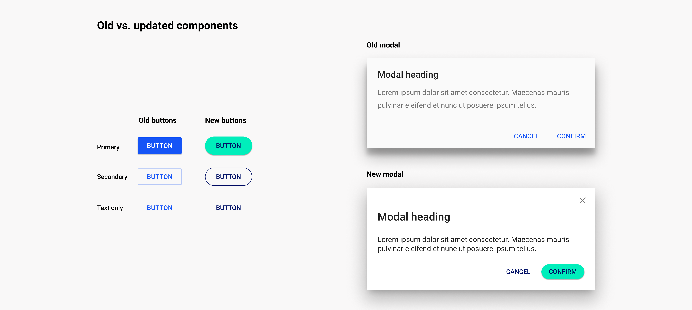
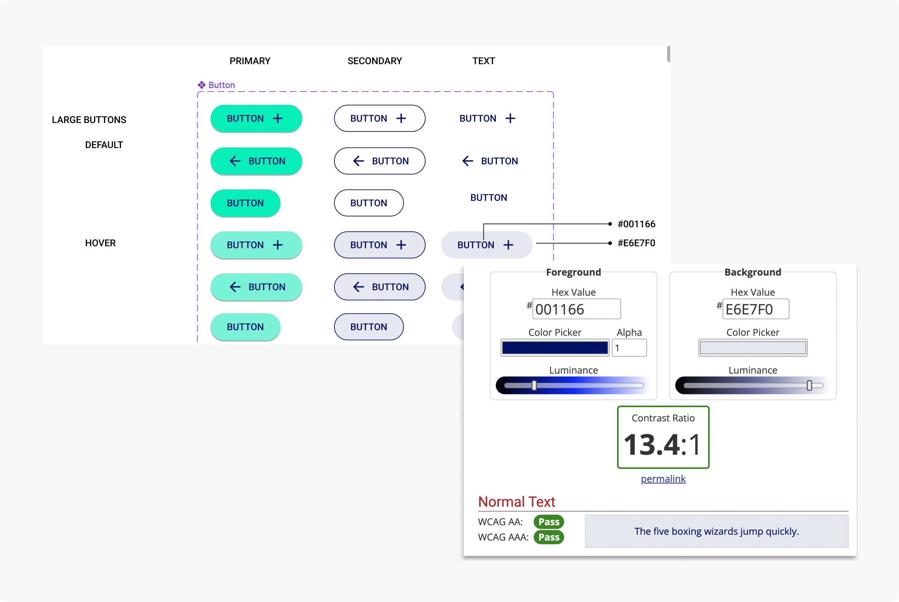
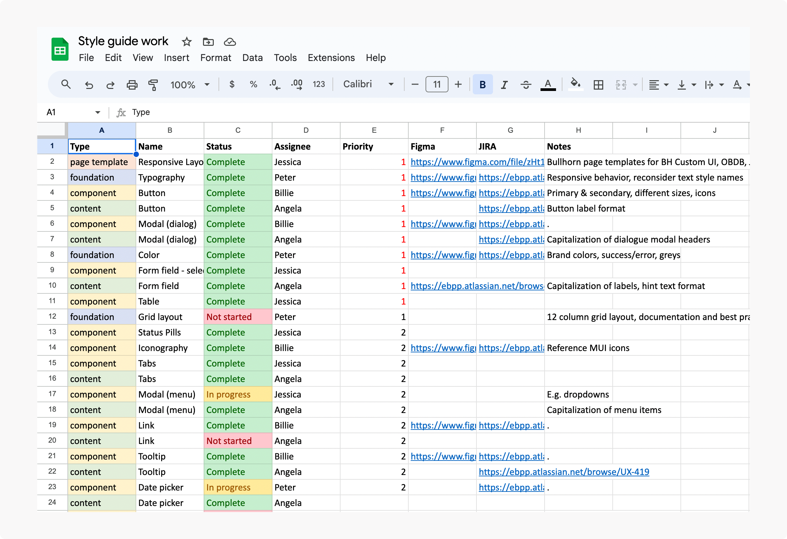
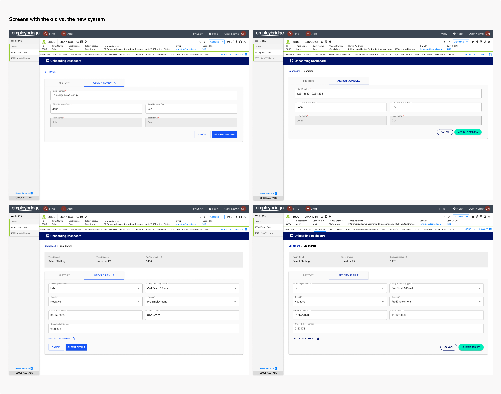

Overview
Employbridge went through a rebrand to modernize the look and feel of marketing materials. Around the same time, the design team noticed inconsistencies between screens we were designing for the same platform (different button placement, typography styles, etc.).
This project explores: How might we bring cohesion to our designs & ensure consistency moving forwards? How might we incorporate updated brand colors in our product design system?
My role
As a designer on this project, my responsibilities included:
Building Figma components
Ensuring accessibility standards were met
Researching other design systems + best practices
Reviewing components with engineering
Tracking the team's progress
The team
2 other designers
1 UX writer
Engineering
Problem
The lack of standardized design guidelines contributed to inconsistent designs and increased internal effort.
Conducting a design audit
Two other designers and I were each responsible for designing different aspects of the CRM experience for internal EB users. We got into the habit of working in silos and, while putting together a presentation to demo the holistic CRM experience, found that our designs reflected the silos we were working in - buttons were bottom left-aligned in some screens, top right-aligned in others. Page headers used different font stylings.
Lots of minor inconsistencies contributed to a disconnected feeling between the designs, despite the fact that they were intended to live in the same workflow. We knew we needed to align our designs and began with an audit to identify all discrepancies.
Defining + documenting design standards
We went through each individual concern and agreed upon standards to follow for alignment.
In most cases, we agreed
upon patterns based on our research of best design practices.
We documented these guidelines in Figma for future reference.
Up until this point, we had been using Material UI's design system. While the components we were
using were the same, we lacked documentation & agreement on how to use the components. Questions like:
"How should you align buttons?" or "How should you structure a form?" were answered during this process.

Problem #2
Using out of the box Material UI didn’t reflect the Employbridge brand identity.
Employbridge's rebrand
Shortly before the design audit occurred, Employbridge underwent a rebrand led by a third party vendor.
To start incorporating this on the UI side, we adopted the updated color palette + typography recommendations from the marketing materials and documented them in Figma.
 Applying EB's branding to UI components
Since we were already putting in the work of examining individual components from the audit, we thought it would be a good time to reskin + update our design system to incorporate some of the new brand identity.
Component documentation
To create a centralized resource for the reskinned components + design standards that came from our audit,
the team & I made a style guide in Figma. This guide included documentation on
all components that were used in the CRM experience, as well as patterns (like responsive behavior) and UX content
guidelines (handled by our UX writer).
We divided the work on reskinning + building components and documenting guidelines.
I was personally responsible for buttons, modals, iconography, links, tooltips, toasts, and banners.
For each component, I researched best practices, looked at other design systems' documentation for inspiration, and
added in elements of our brand (through color updates) where possible.
Inspired by design systems I saw during research,
I structured the file into individual pages for each component (or foundation, pattern, etc.).
Each page contained the Figma component (& relevant variants) as well as guidelines on usage, placement, etc..
Checking WCAG / accessibility considerations
To make sure the components I was creating were accessible, I referenced WCAG (level AA) and checked color contrast, font sizes, etc.. I made sure to include any accessibility-related notes in the component documentation.
Tracking our progress
I created an excel sheet to prioritize + divide the team’s work and keep track of our progress. Along with this, we set up weekly internal calls to check in on progress and talk through ideas. We also spoke with engineering on a weekly basis to keep them in the loop and expose any feasibility concerns.
Getting buy-in: going from style guide to design system
Once we were finished on the design-side (all components created + guidelines written, everything ran by engineering),
the next step was to get support from the business in turning this into a project with a budget so that all of the updates
could be built.
The designers and I had a brainstorming session to name our guide before socializing it - we landed on the name EDGE (Employbridge Design Global Experience).
This project is currently still in the works, our UXD manager is now working on a formal presentation for business stakeholders.
Outcome
Once implemented, our colleague experience will have a design system that meets meets brand guidelines, WCAG, and ensures a more cohesive user experience.
